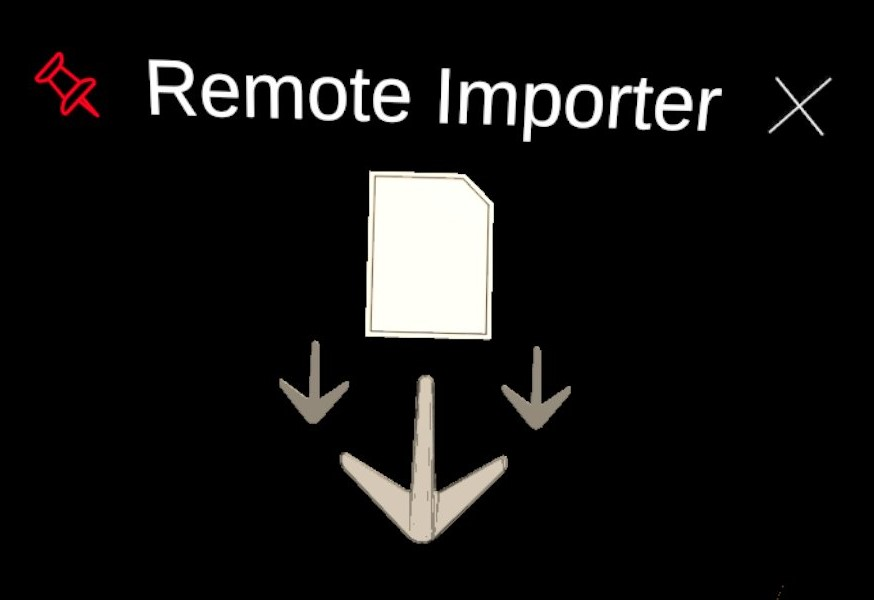
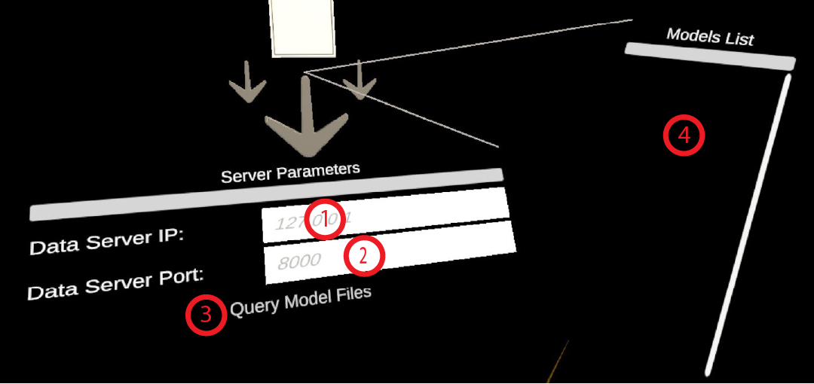

Remote Importer
Requires a connection to Kosmogora.
This is the module that is used to import the data stored on Kosmogora.
Panel Server Parameters
- Input Field Data Server IP. The IP address at which Kosmogora is hosted. Default value is 127.0.0.1 but this only works during development if Kosmogora is hosted on the same machine as the one we are developping ECellDive on.
- Input Field Data Server Port. The Port at which Kosmogora is listening. Default value is 8000. This is also the default value when launching Kosmogora so, unless you specified a port at that time, you can leave the field empty in ECellDive.
- Button Query Available Models. Will try to contact Kosmogora at the address and port given to request the list of models currently available. This is fast. If nothing happens check the Log Menu to see if an error was not raised. If the query is successful, the module will flash green; the list of available files will be displayed in panel Models List. If the query fails, the module will flash red. In that case, you can check the error message in the log.
Panel Models List
- Displays the list of models available in Kosmogora if the request was successful.